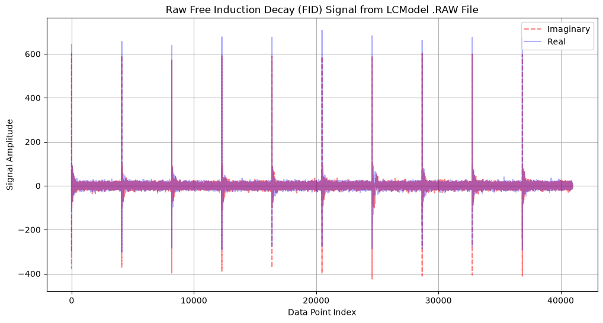
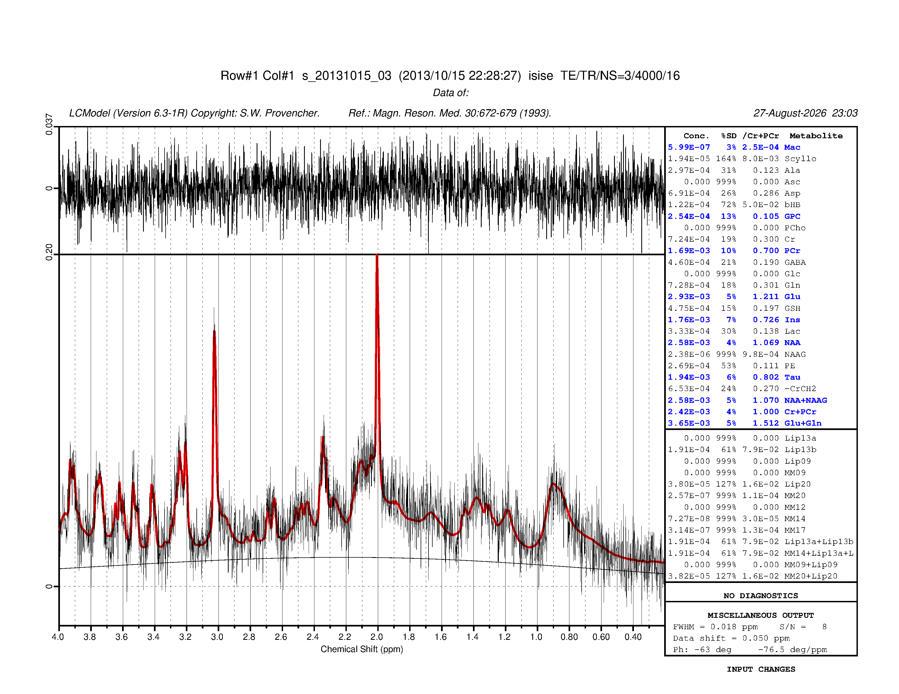
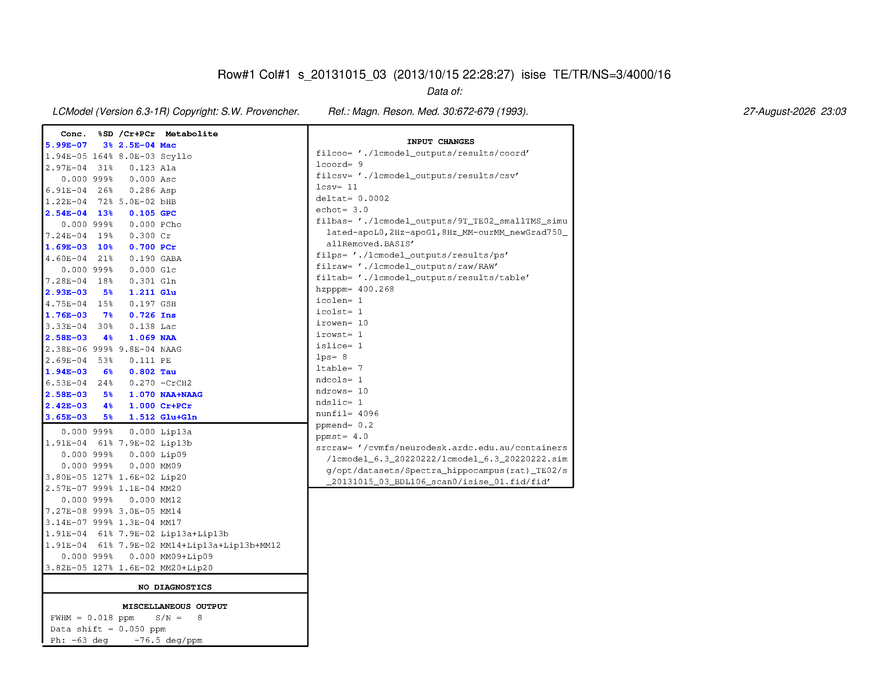
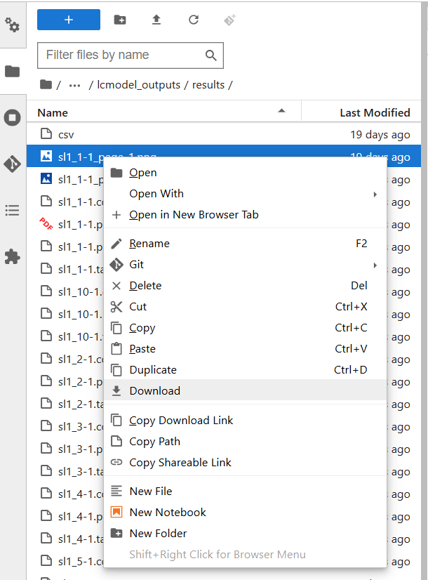

MR Spectroscopy with LCModel#
Analyzing MR Spectra from Rat Hippocampus#
Author: Monika Doerig
Date: 12 Aug 2025
License:
Note: If this notebook uses neuroimaging tools from Neurocontainers, those tools retain their original licenses. Please see Neurodesk citation guidelines for details.
Citation and Resources:#
Tools included in this workflow#
LCModel:
Provencher S. W. (1993). Estimation of metabolite concentrations from localized in vivo proton NMR spectra. Magnetic resonance in medicine, 30(6), 672–679. https://doi.org/10.1002/mrm.1910300604
Python:
Python Software Foundation. (2023). Python (Version 3.11.6) [Software]. Available at https://www.python.org/
Ghostscript:
Artifex Software, Inc. (2021). Ghostscript (Version 9.55.0) [Software]. Available at https://www.ghostscript.com/
Dataset#
Dunja Simicic, & Cristina Cudalbu. (2020). MR Spectra from rat hippocampus with LCModel quantification and the corresponding basis set [Data set]. In Magn Reson Med (Version Part1, Bd. 86, Nummer 5, S. 2384–2401). Zenodo. https://doi.org/10.5281/zenodo.3904443
Simicic, D., Rackayova, V., Xin, L., Tkáč, I., Borbath, T., Starcuk, Z., Jr, Starcukova, J., Lanz, B., & Cudalbu, C. (2021). In vivo macromolecule signals in rat brain 1 H-MR spectra at 9.4T: Parametrization, spline baseline estimation, and T2 relaxation times. Magnetic resonance in medicine, 86(5), 2384–2401. https://doi.org/10.1002/mrm.28910
Load software tools and import python libraries#
import module
await module.load('lcmodel/6.3')
await module.list()
['lcmodel/6.3']
%%capture
!pip install nibabel numpy
# Import the necessary libraries
import matplotlib.pyplot as plt
import os
import subprocess, shutil
from pathlib import Path
import nibabel as nib
import numpy as np
from IPython.display import IFrame, Image, display
import re
import glob
The command below installs Ghostscript, which provides the ps2pdf utility for converting LCModel’s .ps output into a PDF, as well as tools to convert the .ps file into PNG images for easier inline viewing in notebooks and web pages.
!mamba install -c conda-forge ghostscript -y
?25l[+] 0.0s
?25h
Fetch Shard Index for conda-forge/linux-64 ⧖ Starting
Fetch Shard Index for conda-forge/linux-64 ✔ Done (0.1 sec)
Fetch Shard Index for conda-forge/noarch ✔ Done (0.0 sec)
Fetching and Parsing Packages' Shards ⧖ Starting
Fetching and Parsing Packages' Shards ✔ Done (4.7 sec)
Pinned packages:
- python=3.13
Pinned packages:
- python=3.13
Resolving Environment ⧖ Starting
Resolving Environment ✔ Done (0.4 sec)
Transaction
Prefix: /opt/conda
Updating specs:
- ghostscript
Package Version Build Channel Size
────────────────────────────────────────────────────────────
Install:
────────────────────────────────────────────────────────────
+ ghostscript 10.07.1 hecca717_0 conda-forge 63MB
Summary:
Install: 1 packages
Total download: 63MB
────────────────────────────────────────────────────────────
Transaction starting
?25l[+] 0.0s
Downloading ╸━━━━━━━━━━━━━━━━━━━━━━ 0.0 B 0.0s
Extracting ━━━━━━━━━━━━━━━━━━━━━━━ 0 0.0s
[+] 0.1s
Downloading (1) ━━━━━━━━━━━━━━━━━━━━━━━ 1.8MB ghostscript 0.0s
Extracting ━━━━━━━━━━━━━━━━━━━━━━━ 0 0.0s
[+] 0.2s
Downloading (1) ━━━━╸━━━━━━━━━━━━━━━━━━ 16.8MB ghostscript 0.1s
Extracting ━━━━━━━━━━━━━━━━━━━━━━━ 0 0.0s
[+] 0.3s
Downloading (1) ━━━━━━━━━╸━━━━━━━━━━━━━ 29.8MB ghostscript 0.2s
Extracting ━━━━━━━━━━━━━━━━━━━━━━━ 0 0.0s
[+] 0.4s
Downloading (1) ━━━━━━━━━━━━╸━━━━━━━━━━ 38.0MB ghostscript 0.3s
Extracting ━━━━━━━━━━━━━━━━━━━━━━━ 0 0.0s
[+] 0.5s
Downloading (1) ━━━━━━━━━━━━━━━╸━━━━━━━ 46.5MB ghostscript 0.4s
Extracting ━━━━━━━━━━━━━━━━━━━━━━━ 0 0.0s
[+] 0.6s
Downloading (1) ━━━━━━━━━━━━━━━━━━━╸━━━ 55.1MB ghostscript 0.5s
Extracting ━━━━━━━━━━━━━━━━━━━━━━━ 0 0.0s
ghostscript 62.9MB @ 98.5MB/s 0.6s
[+] 0.7s
Downloading ━━━━━━━━━━━━━━━━━━━━━━━ 62.9MB 0.6s
Extracting (1) ━━━━━━━━━━╸━━━━━━━━━━━━ 0 ghostscript 0.0s
[+] 0.8s
Downloading ━━━━━━━━━━━━━━━━━━━━━━━ 62.9MB 0.6s
Extracting (1) ━━━━━━━━━━━╸━━━━━━━━━━━ 0 ghostscript 0.1s
[+] 0.9s
Downloading ━━━━━━━━━━━━━━━━━━━━━━━ 62.9MB 0.6s
Extracting (1) ━━━━━━━━━━━━━╸━━━━━━━━━ 0 ghostscript 0.2s
?25hLinking ghostscript-10.07.1-hecca717_0
Transaction finished
#verify
!which gs
!which ps2pdf
/opt/conda/bin/gs
/opt/conda/bin/ps2pdf
Introduction#
This example demonstrates the processing of MR spectra acquired from the rat hippocampus using LCModel, a standard tool for automatic quantification of magnetic resonance spectroscopy (MRS) data.
The example Varian-format MRS dataset is processed with LCModel to quantify metabolite concentrations. Both the example data and the corresponding basis set are provided within the Neurodesk LCModel container.
Accurate quantification of MRS data requires precise preprocessing and configuration. This example illustrates the complete workflow, from raw data conversion through LCModel setup and execution to output visualization. The pipeline consists of the following steps:
Pipeline:
The example dataset and basis set paths are programmatically identified within the LCModel container.
File existence checks ensure that required data and basis files are available.
The Varian FID file is converted to the raw format compatible with LCModel.
Visualization of raw time-domain data is performed to assess signal quality.
Acquisition parameters are extracted to generate the LCModel control file.
The control file is created with appropriate settings referencing the data and basis files.
LCModel analysis is executed via command line.
Resulting postscript (.ps) files are converted to PDF and PNG formats for easy review and sharing.
🧾 Glossary of Common Terms and Abbreviations
This tutorial involves several domain-specific terms and file formats commonly used in MR spectroscopy and LCModel workflows. Below is a brief overview of key abbreviations and concepts to help you get started.
📚 For full technical details, refer to the LCModel manual.
Software & File Formats#
Term |
Meaning |
|---|---|
LCModel |
A widely used software package for automatic quantification of in vivo proton MR spectra. |
LCMgui |
The graphical user interface for LCModel (optional; not used in this notebook-based workflow). |
FID |
Free Induction Decay — the raw time-domain MRS data typically acquired from Varian, Bruker, Siemens, or GE scanners. |
.RAW |
LCModel-compatible input file containing unprocessed FID data in a specific ASCII format. Should not be windowed or smoothed. |
.CONTROL |
Text file that defines the analysis settings and parameters for LCModel (e.g., file paths, echo time, frequency). |
.BASIS |
A file containing simulated model spectra for known metabolites at specific TE/TR/field strength. Used by LCModel to fit your data. |
.PS |
Optional PostScript output of LCModel’s One-Page summary, including spectra and fitted results. |
extraInfo |
A helper file generated by |
cpStart |
Another helper file from |
Key Control Parameters#
Parameter |
Description |
|---|---|
|
Descriptive title of the scan (will appear on output). |
|
Path to the |
|
Path to the |
|
Path to the output |
|
Spectrometer frequency in MHz (e.g., 123.25). |
|
Dwell time (s), i.e., 1 / sampling frequency. |
|
Number of complex points in the FID. |
|
Echo time (TE) in milliseconds. |
|
Whether eddy current correction is applied (1 = yes, 0 = no). |
|
Water concentration (used for absolute quantification). |
Data conversion tools#
Tool |
Description |
|---|---|
|
LCModel utility to convert Varian-format data (FID + procpar) into a |
|
Dependency used internally by |
Get example data from the container#
This section locates and verifies access to the example dataset bundled inside the LCModel container. It:
Retrieves the path to the lcmodel executable to infer the container base directory.
Constructs full paths to the example Varian fid file and BASIS set directory located within the container.
Uses
globto select the.BASISfile (expects exactly one).Verifies that the
fidfile and.BASISfile exist and prints their status and raises an error if any are missing.
# === Get path to lcmodel executable
lcmodel_path = subprocess.check_output("which lcmodel", shell=True, text=True).strip()
# === Extract container base and image path
container_base = os.path.dirname(lcmodel_path) # e.g., .../lcmodel_6.3_20220222
container_id = os.path.basename(container_base) # e.g., lcmodel_6.3_20220222
simg_path = os.path.join(container_base, f"{container_id}.simg")
# === Construct dataset paths inside
fid_path = os.path.join(
simg_path,
"opt/datasets/Spectra_hippocampus(rat)_TE02/s_20131015_03_BDL106_scan0/isise_01.fid/fid"
)
basis_path = os.path.join(
simg_path,
"opt/datasets/Spectra_hippocampus(rat)_TE02/Control_files_Basis_set"
)
# Get single BASIS file (will raise error if not exactly one)
basis_files = glob.glob(os.path.join(basis_path, "*.BASIS"))
basis_file = basis_files[0]
# === Check existence of the paths
fid_exists = Path(fid_path).exists()
basis_dir_exists = Path(basis_path).exists()
basis_file_exists = Path(basis_file).exists()
# === Report status
print(f"FID path: {fid_path}")
print(f"BASIS file: {basis_file}")
print(f"FID exists? {'✅' if fid_exists else '❌'}")
print(f"BASIS dir exists? {'✅' if basis_dir_exists else '❌'}")
print(f"BASIS file exists? {'✅' if basis_file_exists else '❌'}")
# Raise error or fallback if paths missing
if not fid_exists or not basis_file_exists:
raise FileNotFoundError("One or more required dataset paths could not be found.")
FID path: /cvmfs/neurodesk.ardc.edu.au/containers/lcmodel_6.3_20220222/lcmodel_6.3_20220222.simg/opt/datasets/Spectra_hippocampus(rat)_TE02/s_20131015_03_BDL106_scan0/isise_01.fid/fid
BASIS file: /cvmfs/neurodesk.ardc.edu.au/containers/lcmodel_6.3_20220222/lcmodel_6.3_20220222.simg/opt/datasets/Spectra_hippocampus(rat)_TE02/Control_files_Basis_set/9T_TE02_smallTMS_simulated-apoL0,2Hz-apoG1,8Hz_MM-ourMM_newGrad750_allRemoved.BASIS
FID exists? ✅
BASIS dir exists? ✅
BASIS file exists? ✅
Set up LCModel configuration files#
This script sets up the LCModel environment by copying the hidden .lcmodel directory (containing all required binaries and configuration files) into your home folder. If the .lcmodel directory already exists, the script normally prompts whether to overwrite it — however, in a notebook environment, this prompt is not interactive. To avoid errors, the script can be conditionally run only if .lcmodel does not already exist.
if not os.path.exists(os.path.expanduser("~/.lcmodel")):
!setup_lcmodel.sh
else:
print("~/.lcmodel already exists — skipping setup.")
Setting up lcmodel...
done.
Convert Varian FID file to LCModel-compatible .RAW format#
This step uses the bin2raw utility provided by LCModel to convert a Varian-format FID dataset and its associated procpar file into a .RAW file suitable for spectral fitting in LCModel.
In addition to the .RAW file, two auxiliary files are generated: cpStart and extraInfo. These are typically used by LCMgui to autofill settings, but in this notebook-based workflow, we’ll manually extract relevant parameters from extraInfo and .RAW to generate a custom control (.CONTROL) file for LCModel.
Details & Requirements for bin2raw:
The FID file must be named
fid, with the correspondingprocparfile in the same directory.bin2rawassumes a voxel volume of 1.0, so water-scaling will only be accurate if the suppressed and unsuppressed water scans were acquired with identical voxel sizes.bin2rawdepends on a helper binarybin2asc, both of which must be located in~/.lcmodel/varian/.
Check if the required binaries are present:
! ls $HOME/.lcmodel/varian
bin2asc bin2raw preprocessors
Run bin2raw to convert the Varian fid file into an LCModel .RAW file.
📁 Output:
This command creates the following files inside ./lcmodel_outputs/raw/:
.RAW: The converted LCModel-compatible spectral data.cpStart: Text file containing scan parameters and file paths.extraInfo: Text file providing only a subset of the scan metadata.error: A plain text log file capturing any issues or warnings during conversion. It’s a good idea to check this file automatically after conversion to confirm success.
%%bash -s "$fid_path"
# Exit immediately if a command fails
set -e
# Input: path to directory containing 'fid' and 'procpar'
DATA_FILE="$1"
# Output directory for LCModel-compatible files
LCM_DIR="./lcmodel_outputs/"
MET_H2O="raw" #Subdirectory for the water scan or metabolite
# Create output directory if it doesn't exist
mkdir -p "${LCM_DIR}${MET_H2O}"
# Run the bin2raw conversion
$HOME/.lcmodel/varian/bin2raw $DATA_FILE $LCM_DIR $MET_H2O
Visualizing the RAW FID data from the RAW file#
The following code loads and visualizes the raw time-domain data from the .RAW file. This file contains the input data for a single rat from the Simicic and Cudalbu (2020) dataset. According to the study’s methods, the data were acquired using a single-voxel SPECIAL sequence in the rat hippocampus, with sequence timing parameters TE = 2.8 ms and TR = 4 s. The full experiment involved collecting 160 individual acquisitions (transients) to ensure a high signal-to-noise ratio.
In MRS, a transient refers to one individual acquisition of the free induction decay (FID) signal following an excitation pulse. Multiple transients are collected and typically averaged to improve data quality.
Our plot displays a subset of this data. As will be confirmed in the next step, when we extract the acquisition parameters, the file contains the first 10 of these transients, each composed of 4096 complex data points. Each large spike in the plot marks the beginning of one of these 10 transients, corresponding to the strong initial FID signal immediately following the excitation pulse.
# Load data from RAW for plotting
def load_raw_data(filename):
"""
Parses an LCModel .RAW file to extract real and imaginary parts of the FID signal.
The .RAW file has the following structure:
- Two NAMELIST header blocks: $SEQPAR and $NMID
- Each ends with a line containing only '$END'
- Time-domain FID data follows immediately after the second $END
- The FID is stored as alternating real and imaginary float values
Parameters
----------
filename : str
Path to the .RAW file.
Returns
-------
real : np.ndarray
Real components of the FID.
imag : np.ndarray
Imaginary components of the FID.
"""
with open(filename, 'r') as f:
lines = f.readlines()
# Skip past the two header blocks ($SEQPAR and $NMID)
end_count = 0
data_start = 0
for i, line in enumerate(lines):
if line.strip() == '$END':
end_count += 1
if end_count == 2:
# Data begins immediately after the second $END
data_start = i + 1
break
data_vals = []
# Read all lines after the second $END
# Each line should contain exactly two float values: real and imaginary parts
for line in lines[data_start:]:
parts = line.strip().split()
if len(parts) == 2:
# Convert both parts to floats and add to the data list
data_vals.extend([float(x) for x in parts])
# Separate interleaved real and imaginary values
real = np.array(data_vals[0::2]) # Even indices → real part
imag = np.array(data_vals[1::2]) # Odd indices → imaginary part
return real, imag
real, imag = load_raw_data("./lcmodel_outputs/raw/RAW")
Raw Free Induction Decay (FID) Signal:
This plot shows the unprocessed time-domain MR spectroscopy signal extracted from the .RAW file. The real (blue) and imaginary (red dashed) components represent the complex-valued FID acquired after excitation, before any frequency or phase correction.
Visual inspection of the FID can help identify noise, artifacts, or unexpected decay behavior prior to Fourier transformation and spectral fitting.
# Create the x-axis based on the number of FID points
data_points = np.arange(len(real))
# Plot the data
plt.figure(figsize=(12, 6))
plt.plot(data_points, imag, label='Imaginary', color='red', linestyle='--', alpha=0.5)
plt.plot(data_points, real, label='Real', color='blue', alpha=0.3)
plt.title("Raw Free Induction Decay (FID) Signal from LCModel .RAW File")
plt.xlabel("Data Point Index")
plt.ylabel("Signal Amplitude")
plt.legend()
plt.grid(True)
plt.show()

Extracting parameters to generate the control file#
As noted earlier, the bin2raw conversion produces auxiliary files such as cpStart and embeds a $SEQPAR block in the .RAW file. These contain key acquisition and sequence parameters needed to generate the LCModel control file. In this step, we extract those parameters by parsing both cpStart and the $SEQPAR block from the RAW file. The parsed values are merged into a single dictionary, with $SEQPAR values overriding cpStart in case of overlap. This consolidated parameter set will be used to programmatically construct the .CONTROL file for LCModel.
def parse_cpstart_file(filepath):
params = {}
with open(filepath, 'r') as f:
for line in f:
line = line.strip()
if not line or '=' not in line:
continue
key, val = line.split('=', 1)
key = key.strip()
val = val.strip().strip("'")
try:
if '.' in val or 'e' in val.lower():
val = float(val)
else:
val = int(val)
except ValueError:
pass
params[key] = val
return params
def parse_raw_seqpar(filepath):
params = {}
seqpar_block = False
with open(filepath, 'r') as f:
for line in f:
line = line.strip()
if line.startswith('$SEQPAR'):
seqpar_block = True
continue
if line.startswith('$END') and seqpar_block:
break
if seqpar_block:
# example line: hzpppm=400.268
if '=' in line:
key, val = line.split('=', 1)
key = key.strip()
val = val.strip()
try:
if '.' in val or 'e' in val.lower():
val = float(val)
else:
val = int(val)
except ValueError:
val = val.strip("'")
params[key] = val
return params
# Paths to cpStart and RAW
cpstart_path = "./lcmodel_outputs/raw/cpStart"
raw_path = "./lcmodel_outputs/raw/RAW"
# Parse both
cpstart_params = parse_cpstart_file(cpstart_path)
seqpar_params = parse_raw_seqpar(raw_path)
# Merge dictionaries, seqpar overrides cpstart if keys overlap
all_params = {**cpstart_params, **seqpar_params}
print(all_params)
{'title': 's_20131015_03 (2013/10/15 22:28:27) isise TE/TR/NS=3/4000/16', 'filraw': './lcmodel_outputs/raw/RAW', 'filps': './lcmodel_outputs/ps', 'hzpppm': 400.268, 'deltat': 0.0002, 'nunfil': 4096, 'ndcols': 1, 'ndrows': 10, 'ndslic': 1, 'echot': 3.0}
Write and run the control file#
With all required acquisition parameters parsed from the .RAW and cpStart files, we now generate the LCModel control file programmatically. This file defines the input data (.RAW), output locations (e.g., .TABLE, .PS, .CSV, .COORD), basis set, and sequence-specific parameters such as spectral width or echo time. The control file is written to disk using the write_lcmodel_control() function. Finally, LCModel is executed by piping the control file into the lcmodel command-line tool, launching the spectral fitting and quantification process.
key parameter).For details, see: http://s-provencher.com/lcmodel.shtml
# Define file paths for LCModel output organization
# Base directory for all output results
res_dir = "./lcmodel_outputs/results"
# Create the results directory if it doesn't exist yet
os.makedirs(res_dir, exist_ok=True)
# Define file paths within results directory
table_path = os.path.join(res_dir, "table") # Tabular data outputs
csv_path = os.path.join(res_dir, "csv") # CSV exports
coord_path = os.path.join(res_dir,"coord") # Coordinate-related outputs
ps_path = os.path.join(res_dir,"ps") # Postscript (.ps) output files
# Copy the basis file from CVMFS to the local output directory
original_basis_path = basis_file
local_basis_filename = os.path.basename(original_basis_path)
local_basis_path = os.path.join('./lcmodel_outputs', local_basis_filename)
print(f"--> Copying basis file to local directory...")
shutil.copy(original_basis_path, local_basis_path)
--> Copying basis file to local directory...
'./lcmodel_outputs/9T_TE02_smallTMS_simulated-apoL0,2Hz-apoG1,8Hz_MM-ourMM_newGrad750_allRemoved.BASIS'
def write_lcmodel_control(control_path, params):
"""
Writes a formatted control file for an LCModel analysis.
Parameters:
control_path (str): Output path for the CONTROL file
params (dict): Dictionary containing all required and optional parameters.
Required keys: raw_path, srcraw, basis_path, ps_path, table_path,
csv_path, coord_path, title, nunfil, ndslic, ndrows,
ndcols, hzpppm, echot, deltat, irowst, irowen, icolst, icolen
Optional keys: ppmst (4.0), ppmend (0.2), ltable (7), lps (8),
lcsv (11), lcoord (9), islice (1), key (210387309)
"""
# Apply defaults for optional parameters
p = {
'ppmst': 4.0,
'ppmend': 0.2,
'ltable': 7,
'lps': 8,
'lcsv': 11,
'lcoord': 9,
'islice': 1,
'key': 210387309,
**params # user values override defaults
}
content = f""" $LCMODL
title= '{p['title']}'
srcraw= '{p['srcraw']}'
ppmst= {p['ppmst']}
ppmend= {p['ppmend']}
nunfil= {p['nunfil']}
ndslic= {p['ndslic']}
ndrows= {p['ndrows']}
ndcols= {p['ndcols']}
ltable= {p['ltable']}
lps= {p['lps']}
islice= {p['islice']}
irowst= {p['irowst']}
irowen= {p['irowen']}
icolst= {p['icolst']}
icolen= {p['icolen']}
hzpppm= {p['hzpppm']}
filtab= '{p['table_path']}'
filraw= '{p['raw_path']}'
filps= '{p['ps_path']}'
filbas= '{p['basis_path']}'
echot= {p['echot']}
deltat= {p['deltat']}
key= {p['key']}
lcsv= {p['lcsv']}
filcsv= '{p['csv_path']}'
lcoord= {p['lcoord']}
filcoo= '{p['coord_path']}'
$END
"""
with open(control_path, "w", encoding="ascii") as f:
f.write(content)
print(f"✅ CONTROL file written to {control_path}")
lcmodel_params = {
'raw_path': raw_path,
'srcraw': fid_path,
'basis_path': local_basis_path,
'ps_path': ps_path,
'table_path': table_path,
'csv_path': csv_path,
'coord_path': coord_path,
'title': all_params.get('title', 'Default Title'),
'nunfil': all_params['nunfil'],
'ndslic': all_params['ndslic'],
'ndrows': all_params['ndrows'],
'ndcols': all_params['ndcols'],
'hzpppm': all_params['hzpppm'],
'echot': all_params['echot'],
'deltat': all_params['deltat'],
'irowst': 1,
'irowen': all_params['ndrows'],
'icolst': 1,
'icolen': all_params['ndcols'],
}
write_lcmodel_control('./lcmodel_outputs/control', lcmodel_params)
✅ CONTROL file written to ./lcmodel_outputs/control
# Print the content of the control file
print("--- Verifying content of control file ---")
with open('./lcmodel_outputs/control', 'r') as f:
print(f.read())
--- Verifying content of control file ---
$LCMODL
title= 's_20131015_03 (2013/10/15 22:28:27) isise TE/TR/NS=3/4000/16'
srcraw= '/cvmfs/neurodesk.ardc.edu.au/containers/lcmodel_6.3_20220222/lcmodel_6.3_20220222.simg/opt/datasets/Spectra_hippocampus(rat)_TE02/s_20131015_03_BDL106_scan0/isise_01.fid/fid'
ppmst= 4.0
ppmend= 0.2
nunfil= 4096
ndslic= 1
ndrows= 10
ndcols= 1
ltable= 7
lps= 8
islice= 1
irowst= 1
irowen= 10
icolst= 1
icolen= 1
hzpppm= 400.268
filtab= './lcmodel_outputs/results/table'
filraw= './lcmodel_outputs/raw/RAW'
filps= './lcmodel_outputs/results/ps'
filbas= './lcmodel_outputs/9T_TE02_smallTMS_simulated-apoL0,2Hz-apoG1,8Hz_MM-ourMM_newGrad750_allRemoved.BASIS'
echot= 3.0
deltat= 0.0002
key= 210387309
lcsv= 11
filcsv= './lcmodel_outputs/results/csv'
lcoord= 9
filcoo= './lcmodel_outputs/results/coord'
$END
Run lcmodel#
The following command runs the LCModel software by feeding it the control file via standard input. This control file contains all necessary parameters and file references that LCModel needs to perform the spectral quantification analysis.
Note: Because the data contains multiple transients, LCModel generates separate output files for each transient, enabling detailed per-transient analysis.
!lcmodel < ./lcmodel_outputs/control
Results#
Exporting LCModel Output to PDF and PNG Formats#
LCModel outputs PostScript (.ps) files summarizing the spectral fit results, which can be converted to other formats like PDF or to PNG images for easier viewing and sharing. Converting to PDF using ps2pdf preserves the vector graphics and multipage layout, making it suitable for high-quality printing and detailed inspection.
#convert .ps to .pdf
!ps2pdf ./lcmodel_outputs/results/sl1_1-1.ps ./lcmodel_outputs/results/sl1_1-1.pdf
Alternatively, converting the .ps to PNG images with Ghostscript (gs) produces raster images (one per page) that are easy to display inline in notebooks and web pages without requiring PDF viewers.
The following gs command converts a multi-page PostScript (.ps) file into one or more high-resolution PNG images — one image per page.
Explanation of options:
Option |
Description |
|---|---|
|
Runs Ghostscript in safe mode, restricting file access for security. |
|
Tells Ghostscript to exit after processing is complete. |
|
Disables pausing between pages — needed for automated or batch conversion. |
|
Prevents Ghostscript from automatically rotating pages based on their orientation. |
|
Sets the output format to PNG with 24-bit color (8 bits per RGB channel). |
|
Sets the resolution of the output images to 300 DPI (high quality). |
|
Starts processing from page 1. You can also add |
|
Specifies the output filename pattern. The |
|
Forces portrait orientation for all output pages. |
|
Specifies the input PostScript file to convert. |
#convert .ps to 2 png images
!gs -dSAFER -dBATCH -dNOPAUSE -dAutoRotatePages=/None \
-sDEVICE=png16m -r300 \
-dFirstPage=1 \
-sOutputFile=./lcmodel_outputs/results/sl1_1-1_page_%d.png \
-c "<</Orientation 1>> setpagedevice" \
-f ./lcmodel_outputs/results/sl1_1-1.ps
GPL Ghostscript 10.07.1 (2026-05-19)
Copyright (C) 2026 Artifex Software, Inc. All rights reserved.
This software is supplied under the GNU AGPLv3 and comes with NO WARRANTY:
see the file COPYING for details.
Loading NimbusSans-Regular font from %rom%Resource/Font/NimbusSans-Regular... 3504560 2128722 1997048 697687 1 done.
Loading NimbusSans-Italic font from %rom%Resource/Font/NimbusSans-Italic... 3645176 2334640 2017248 713785 1 done.
Loading NimbusMonoPS-Bold font from %rom%Resource/Font/NimbusMonoPS-Bold... 3906992 2599041 2077848 766552 1 done.
Loading NimbusMonoPS-Regular font from %rom%Resource/Font/NimbusMonoPS-Regular... 4148608 2841738 2098048 773774 1 done.
# display the to png images (two pdf pages)
for i in range(1, 3):
display(Image(filename=f"./lcmodel_outputs/results/sl1_1-1_page_{i}.png"))


Note on PDF viewing: PDFs can be displayed directly within Jupyter notebooks using IFrame, but this only works in interactive environments (local Jupyter, Colab, etc.). When viewing this notebook on GitHub Pages, the PDFs won’t render due to security restrictions.
# This works in Jupyter but not on GitHub Pages
IFrame("./lcmodel_outputs/results/sl1_1-1.pdf", width=1000, height=800)
#
To download the output PNGs or PDFs, open the file browser in the JupyterLab interface, navigate to the output directory (e.g., ./lcmodel_outputs/results/), right-click the desired file, and select Download.
Image(filename='lcmodel_assets/download_png.png')

Dependencies in Jupyter/Python#
Using the package watermark to document system environment and software versions used in this notebook, alongside the Neurodesktop version extracted from the
JUPYTER_IMAGEorNEURODESKTOP_VERSIONenvironment variables.
import os
%load_ext watermark
%watermark
%watermark --iversions
neurodesktop_version = (
os.environ.get('JUPYTER_IMAGE', '').split(':')[-1] or
os.environ.get('NEURODESKTOP_VERSION', 'unknown')
)
print(f"Neurodesktop version: {neurodesktop_version}")
Last updated: 2026-08-27T23:03:13.191437+00:00
Python implementation: CPython
Python version : 3.13.14
IPython version : 9.12.0
Compiler : GCC 14.3.0
OS : Linux
Release : 6.8.0-111-generic
Machine : x86_64
Processor : x86_64
CPU cores : 16
Architecture: 64bit
IPython : 9.12.0
matplotlib: 3.11.0
nibabel : 5.4.2
numpy : 2.5.1
re : 2.2.1
Neurodesktop version: 2026-07-11